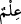

bozguncuları sevmez.”
et-Te’vîlâtü’n-Necmiyye’de der ki: “Allah’ın verdiği insânî kabiliyetleri, şeriata ve
insanın tabiî fıtratına muhâlefette kullanmak sûretiyle ruh dünyasında fesâdı arzulama...”
“Şüphesiz ki Allah, bozguncuları” kötü fiillerinden dolayı “sevmez.” Buna mukabil
iyi ve güzel amel işleyen muslih kullarını sever. Aralarından abdâl () kullarını
seçer; onlar da cehâlet yerine ilmi, cimrilik yerine cömertliği, aç gözlülük yerine iffeti,
zulûm yerine adâleti, taşkınlık yerine teenniyi, fesâd yerine salâhı ön plana çıkarırlar.
Böylece insan abdâl olunca, ahbâblar derecesine doğru yükselir.
78. Kârûn ise: O (servet) bana ancak kendimdeki bilgi sayesinde verildi, demişti.
Bilmiyor muydu ki Allah, kendinden önceki nesillerden, ondan daha güçlü, ondan
daha çok taraftarı olan kimseleri helâk etmişti. Günahkârlardan günahları
sorulmaz (Allah onların hepsini bilir).
“Kârûn” kendisine nasihat edenlere “ise: O (servet) bana ancak kendimdeki bilgi
sayesinde verildi, demişti.”
“ (kendimdeki bilgi sayesinde)” ifâdesi; “ (o bana verildi)” fiilinin
(o bana verildi)” fiilinin
nâib-i fâilinden hâldir. Yahud da “ harf-i cerri, “ (o bana verildi)” fiiline
harf-i cerri, “ (o bana verildi)” fiiline
mütealliktır; bu durumda “ (ilim)” onun sıfatıdır.
Mânâsı şöyledir: Bu mal bana, Tevrât ilmime binâen bir hak olarak verilmiştir. Kârûn,
onların Tevrât’ı en iyi bileniydi. İlmi sebebiyle diğer insanlardan üstün olmayı
hakettiğini; mal ve makamca da onlardan daha üst bir konumda olması gerektirdiğini
iddiâ ediyordu. O, Allah Teâlâ’nın nimet ve ihsanına, fazl ve ikramına bakmadı. Bu
yüzden de helâk oldu. İşte iddiâ, övünme ve küfrân-ı nimet konusunda onun yolundan
gidenler de bir gün işledikleri günahlar sebebiyle onun gibi helâk olurlar.
Hâfız der ki:
Ey fakih, habire ilminle ve amelinle böbürlenip durma
Çünkü hiç kimse Allah’ın kazâsından kurtulamaz
Sâib der ki:
Yakaları, “Lâ” (yokluk) makası şeklinde olduğu hâlde
Mağrur olanlar hiçbir zaman yokluğu düşünmezler